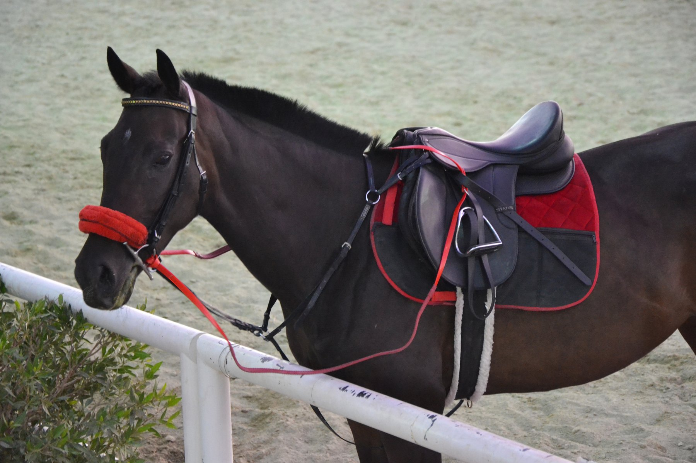

The Saudi-bred horse dominates the 2,000-metre finale as Camilio Ospina completes a treble at King Abdulaziz Racecourse.
Wanaameen won the Prince Mohammed bin Saud Al Kabeer Cup preparatory race by 15 lengths at King Abdulaziz Racecourse in Riyadh on Saturday, 24 October 2026, covering 2,000 metres in 2:10.649 in the evening’s finale.
Camilio Ospina rode the four-year-old Saudi-bred horse for trainer Bader Rizaiq and the sons of King Abdullah bin Abdulaziz. Shadow finished second and Kaflahom third, according to the Jockey Club of Saudi Arabia’s official results.
The race offered SAR 120,000 in total prize money, including SAR 60,000 for the winner. It was a preparation for the cup, not the cup race itself, and concluded a 12-race dirt card.
A treble for Ospina
The victory completed a treble for Ospina, who had earlier won race five over 1,400 metres on Allah Yahyiha and race nine over 1,800 metres on Majaal. All three horses are owned by the sons of King Abdullah bin Abdulaziz; Hesham Abdulwahed trained the winners of races five and nine.
In race eight, an open race, Ya Dar won under Ricardo Ferreira for trainer Abdullah Alsidrani, completing 1,600 metres in 1:43.864. The race carried a SAR 120,000 purse, with SAR 60,000 going to the winner.
Arabian and locally bred winners
Baseq And Bake opened the meeting with victory in the 1,200-metre open Arabian race, ridden by Ricardo Ferreira and trained by Bassim Almousa, in 1:22.630. In race ten, for Arabians over 2,000 metres, Algheed won in 2:23.044 under Fawaz Alshammari for trainer Reyaan Alibrahim.
Among the locally bred runners, Dahmat Alwadi won race six, an open contest for two-year-olds over 1,600 metres, under Eddie Castro for trainer Abdulaziz Alhzabi. Ghala Wateen took race eleven, a 2,000-metre maiden for locally bred horses, in 2:14.040 with Mohammad Alyami riding for trainer Mana Saleh Alzamanan.
The meeting continued the 2026–2027 Riyadh racing season, which opened at the same racecourse on 16 October.
Source: Jockey Club of Saudi Arabia, official programme and results for Saturday, 24 October 2026.
Photo: “Horse Club Riyadh” — Sammy Six, 2011, via Wikimedia Commons; CC BY 2.0. Proportionally resized for the web without cropping. · 1 · https://creativecommons.org/licenses/by/2.0/